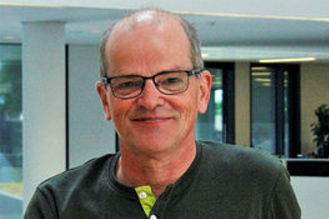
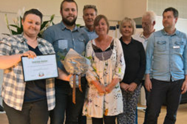
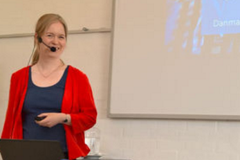

Jobcenter og UU-leder gir budget tip
Noget af det vigtigste på AspIT er at skaffe eleverne et værdiskabende job. Altså et job, hvor
både medarbejder, og arbejdsgiver oplever værdi i samarbejdet. Derfor er det med både glæde og
faglig stolthed, at aspIT netop har modtaget den Dansk-Tysk Innovationspris 2014, som
erhvervslivets anerkendelse af det, AspIT står for.
Læs mere

Hvem vandt årets priser til årsmødet?
Den nye tradition på AspITs årsmøder er uddelingen af priser. Vel at mærke den slags, hvor alle
kan være med til at gi' andre anerkendelse for både indsats og indstilling. Resultatet af de
mange forslag blev igen i år til en både varm og inspirerende oplevelse for et stort publikum på
konferencen forleden. Og vinderne - dem er der mange af.
Læs mere

Danmarks Evalueringsinstitut om AspIT
Denne tid er for mange mennesker eksamenstid. Sådan er det også på AspIT. Men i år er det ikke
kun eleverne, der bedømmes. Nu har hele AspIT fået karakterer. Danmarks Evalueringsinstitut/EVAA
fortalte torsdag et stort publikum på AspITs årsmøde om resultatet af det omfattende analyse- og
evalueringsarbejde. Den korte version; alt er ret godt.
Læs mere